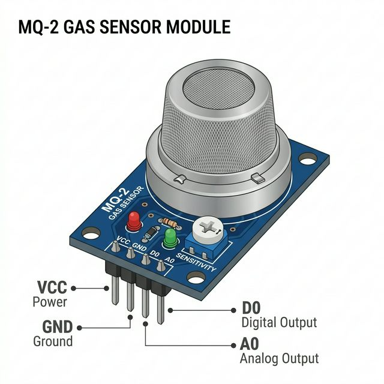

The MQ-2 Gas Sensor is a popular chemoresistor-based component used for detecting gas leakage in homes or industry. It is highly sensitive to flammable gases like LPG, propane, methane, hydrogen, alcohol, smoke, and carbon monoxide.

Inside the metallic mesh dome lies a small heating element (a resistor) and a sensing material usually made of Tin Dioxide (SnO2):
| Pin | Function |
|---|---|
| VCC | Power supply. Connect to Arduino 5V. |
| GND | Common ground connection. |
| D0 | Digital Output. Goes LOW (0V) when the gas concentration exceeds the threshold set by the built-in potentiometer. |
| A0 | Analog Output. Outputs a voltage (0-5V) directly proportional to the measured gas concentration. |
During a running simulation, a dark floating control panel with a slider will appear beneath the MQ-2 module. Drag this slider to simulate an increase in ambient smoke or gas parts-per-million (ppm). Your Arduino's `analogRead(A0)` will immediately spike alongside it!
You can use both the analog and digital outputs simultaneously. The analog output provides a raw concentration value, while the digital output acts as a simple boolean trigger.
// Define Sensor Pins
const int analogPin = A0; // Analog pin for raw reading
const int digitalPin = 2; // Digital pin for threshold reading
void setup() {
pinMode(digitalPin, INPUT); // Set digital pin as input
Serial.begin(9600); // Start serial monitor
Serial.println("MQ-2 Heating up... (Wait 20s in real life)");
}
void loop() {
// Read the raw analog gas concentration value (0 to 1023)
int gasLevel = analogRead(analogPin);
// Read the boolean digital threshold state
// LOW means the gas concentration is above the danger threshold!
int dangerLevel = digitalRead(digitalPin);
Serial.print("Raw Gas PPM Value: ");
Serial.print(gasLevel);
if (dangerLevel == LOW) {
Serial.println(" --- ⚠️ DANGER: HIGH GAS DETECTED!");
} else {
Serial.println(" --- Environment Safe.");
}
delay(1000); // Read every second
}